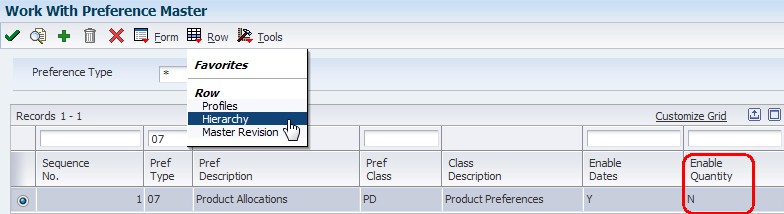
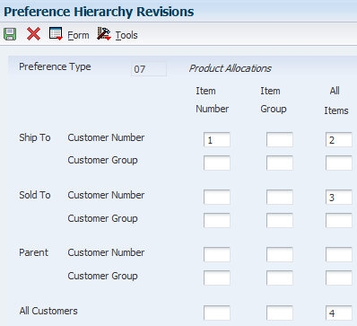
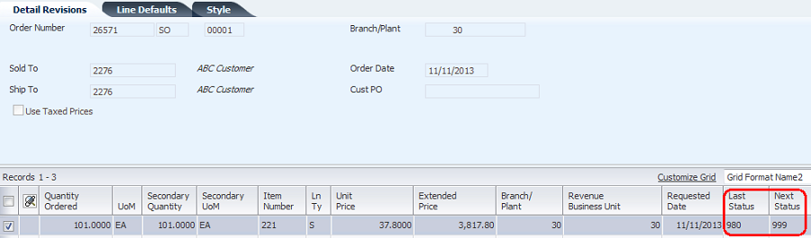
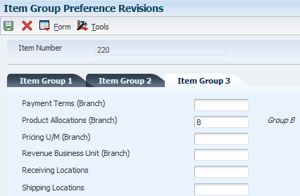
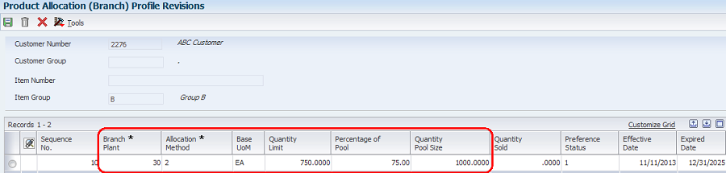
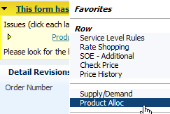
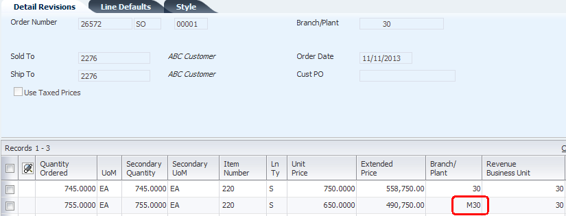
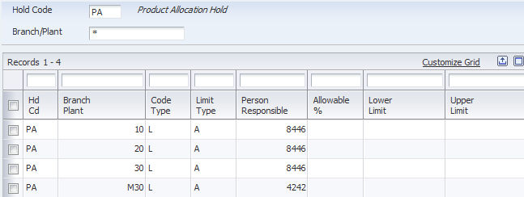
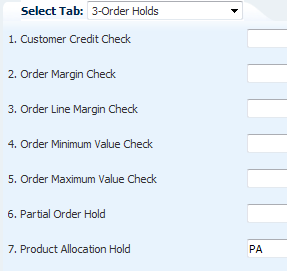
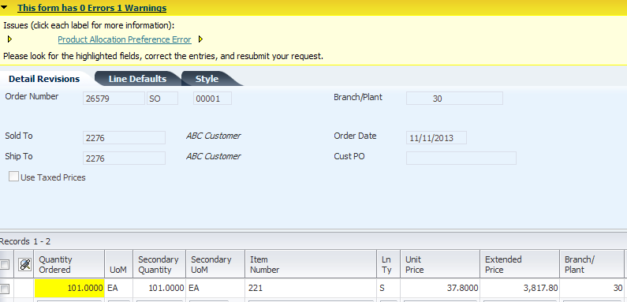

3. Sales Order Entry (P4210) – enable Preferences tab, Option #1 (Preference Profile Processing)
| Purpose |
| Scope |
| Details |
| Product Allocation (Preference Type 07) |
| Product Allocation by Branch (Preference Type 39) |
| Using Product Allocation Hold |
| Additional Information |
| References |
Overview
The Product Allocation preference is used to control the sales of products by restricting the quantities that can be sold. Quantity limits can be set which specify the quantity each customer is allowed to purchase, or the quantity allowed to be sold of each item. Complex Customer Groups will not work with this preference.
When an order is placed for an allocated product, the quantity ordered accumulates toward the allocation limit. The Quantity Sold field is updated each time sales orders are entered for the allocated product and displays the quantity ordered since the allocation went into effect. When an order is changed or canceled, the quantity is subtracted from the running total. When the Quantity Limit is exceeded, the quantity will highlight and a warning is issued in Sales Order Entry.
Quantities should not be enabled in the Preference Master for this preference. Kits and configured items are not functional with the Product Allocation preference.
Set Up
1. Preference Hierarchy – in Preference Master (P40070), inquire on the preference type and take the Row Exit to Preference Hierarchy (P40073).

Note: Enable Quantity is set to No, which is a requirement for both allocation preferences.

Note: This hierarchy was set up without using Customer Groups, which is not supported for either allocation preference.
2. In Product Allocation Profiles (P40307), add the product allocation preference. In this example, this preference is set up for an item and a customer, with a Quantity Limit of 100 EA.
3. Sales Order Entry (P4210) – enable Preferences tab, Option #1 (Preference Profile Processing)

4. In the Preference Processing Options (R40400) version called by P4210, enable Product Allocation.

Steps
1. Add a sales order for a quantity higher than the Quantity Limit set up for this preference. The following warning is received: Product Allocation Preference Error (Error ID 3870)

2. Because this is a warning, the user has the option to ignore the warning and continue order entry, or to cancel the line. To cancel the line, take the Row Exit to Product Allocation.

3. In Work with Product Allocation Quantity (P42131), the Quantity Ordered, Quantity Limit and Quantity Over will indicate why this order received the warning. To cancel the quantity, select Return Balance from the Row Exit.

4. Order line is canceled

The Product Allocation (by Branch) preference is used in the same manner as the previous preference, except for the additional flexibility of using a specific Branch/Plant. Note: The Product Allocation (Preference Type 07) and Product Allocation by branch (Preference Type 39) preferences are resolved together.
When these two preferences are activated at the same time, Preference Type 39 takes precedence over Preference Type 07, therefore, the Preference Hierarchy and other details are according to the definition for Preference Type 39. If the set up for Preference Type 07 is not matching the setup for Preference Type 39, then the preference will not work. Also, if processing only Preference Type 07, make sure that Product Allocation by Branch (Preference Type 39) is not activated in Preference Process Options (R40400).
Set Up
1. Preference Hierarchy – in Preference Master (P40070), inquire on the preference type and take the Row Exit to Preference Hierarchy (P40073).

Note: Enable Quantity is set to No, which is a requirement for both allocation preferences.

2. In this example, an Item Group will be used for setting up the preference. Define Item Group in Item Group Preferences (P40072).

3. Product Allocation Profiles (P40339) - add the product allocation preference for customer and Item Group. In this example, for Branch 30, Allocation Method 2 (percentage) of Pool Size of 1,000 EA is set up for Customer 2276 and Item Group B. The Quantity Limit is calculated by the system using Quantity Pool Size X Percentage of Pool (1000 x 75% = 750).

4. Sales Order Entry (P4210) – enable Preferences tab, Option #1 (Preference Profile Processing)

5. In the Preference Processing Options (R40400) version called by P4210, enable Product Allocation (branch specific).

Steps
1. Add a sales order for a quantity higher than the Quantity Limit set up for this preference. The following warning is received: Product Allocation Preference Error (Error ID 3870).

2. To review Product Allocation information, take the Row Exit to Product Allocation (42131).

3. Review the allocation information. In this example, selecting Close so the line can be modified, rather than canceled.

4. Change the quantity on the line to below the Quantity Limit and warning disappears.

5. Add another line for a different branch that does not have Product Allocation set up for this item. No error is received, as expected.

The Product Allocation Hold can be used in conjunction with both Product Allocation Preferences, but not as a stand-alone hold code. When this hold code is used, the sales order will be put on hold when the user enters an order that exceeds that allocation definition.
Set Up
1. In Hold Order Constants (P42090), the Product Allocation Hold is typically set up as a Line Level hold. However it should be understood that a Line Basis Hold puts the entire order on hold.

2. In Sales Order Entry version of P4210, set Order Holds tab, Option #7 (Product Allocation Hold) with the PA hold code.

Steps
In this example, the Product Allocation Hold will be demonstrated in conjunction with the Product Allocation Preference (Preference Type 07).
1. Enter an order that exceeds the limit.

2. The user submits the order, bypassing the Product Allocation Preference Error warning message. This causes the order to go on PA hold, which will need to be released before processing the order.